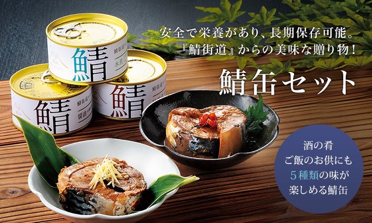
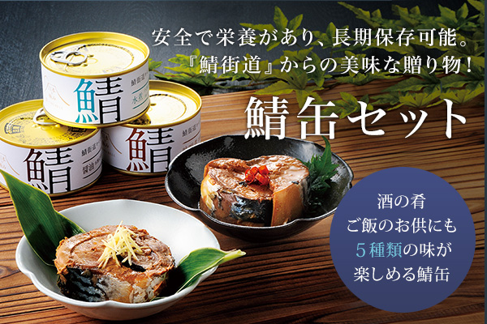
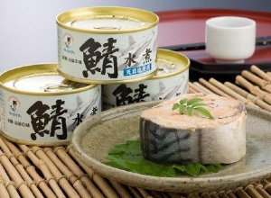
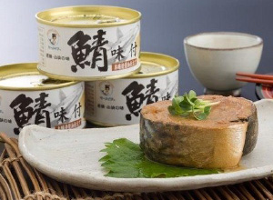
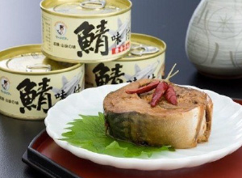
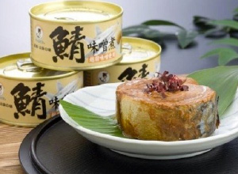
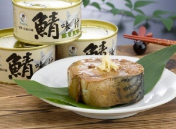

リンベルが日本一と認めた「極みの味」
5種類の味が楽しめる鯖缶セット


鯖には脳の栄養素と呼ばれるDHAと、血液をサラサラにする効果が高いEPAがたくさん含まれています。味覚にこだわると共に、鯖どころ特有の調味技術により味艶豊かに仕上げ、醤油、唐辛子などバラエティゆたかな味わいの缶詰をセットにしました。酒の肴としてはもちろん、熱々のご飯のお供や、炒飯やパスタ など、いろいろな料理にお使いいただけます。
5種類の味が楽しめる鯖缶

鯖 水煮缶
吟味厳選した新鮮な大鯖を、こだわりの塩「海のいのち」で風味豊かに仕上げました。鯖本来の旨味をご堪能下さい。サラダ、グラタン、和風パスタに。大根おろしや大葉をのせてさっぱりとした味付けもお勧めです。

鯖 味付け缶
若狭小浜の鯖味付缶は、原料魚を厳選し、味覚にこだわると共に、鯖どころ特有の調味技術により味艶豊かに仕上げております。冷暗所にて保管頂き、開封後はすみやかにお召しあがり下さい。

鯖味付け缶 唐辛子入り
従来の鯖味付缶にパンチの効いた唐辛子を加えました。爽やかな辛さと、この新創味を是非ご賞味下さい。熱々の御飯に、酒の肴はもちろんのこと炒飯の具や白菜、お葱との炊き合わせがお勧めです。

鯖 八丁味噌煮缶
三年の歳月をかけて造られる名うての八丁味噌独特の風味 味わいが鯖の旨味を引き立てています。冷暗所にて8保管頂き開封後はすみやかにお召しあがり下さい。

鯖 生姜煮缶
切っても切れない縁の鯖と生姜。生姜をほのかに香らせきりっと味をしめました。相性のいい生姜と鯖の風味をお楽しみください。冷暗所にて保管頂き開封後はすみやかにお召しあがり下さい。

極みの鯖缶を使った
10のバル風レシピをご紹介
フードクリエイター 金魚（青山清美）さん
詳しくはこちら